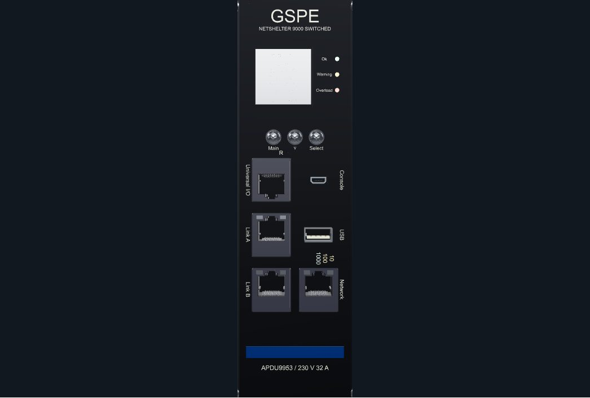

Component 06
NMC3 network management controller
GSPE APDU9953 · NMC3 controller

Component details
Specification
Controller surfaces
Stepped aperture, latch windows, spring contacts and dual light pipes.
Retention windows, angled detents, cream isolator tongue and four contacts.
Chamfered trapezoid shell, 0.6 mm tongue and five console contacts.
OLED display with separate lens, bezel and three navigation domes.
Controller board and retained electronics behind the service face.
Grounded metal tray with louvers, standoffs and fastening points.
Display & shielding tray. OLED fascia, navigation domes, reset plunger and grounded service tray.